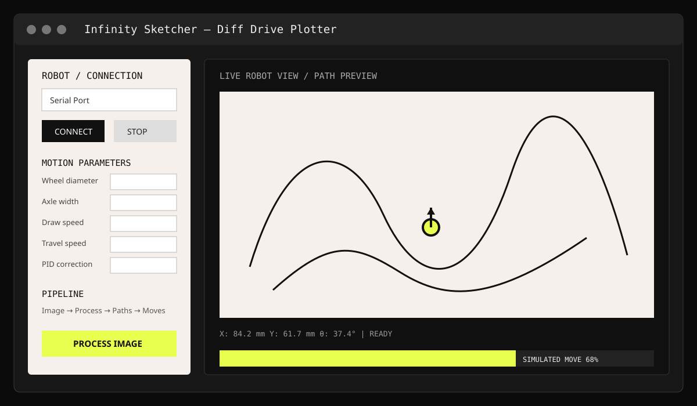

How does an image become a drawing?
The host converts image content into contours and simplified strokes, orders them into a toolpath and sends motion commands to the robot.
PIPELINE QUESTIONPROJECT 01 · CNC · EMBEDDED · COMPUTER VISION
A differential-drive CNC drawbot built as an end-to-end image-to-motion system. Python handles image processing, contour extraction, path planning and kinematics while an Arduino executes synchronized motor control and hardware safety logic.
SKILLS
Python host for image processing, path planning, simulation and serial communication; Arduino executor for motor pulses, motion control and safety.
Grayscale/scale, inversion where required, thresholding, Suzuki-Abe contour extraction and Douglas-Peucker path simplification.
Greedy nearest-neighbour stroke ordering with endpoint checks and stroke reversal to reduce unnecessary travel.
Bresenham-like pulse synchronization, trapezoidal acceleration and straight-line PID correction for the differential-drive mechanism.
Wheel step resolution is derived from motor steps, microstepping, wheel diameter and circumference:
Rotational resolution is derived from axle width and linear step resolution:
The Tkinter GUI separates screen coordinates from mathematical and physical coordinates. Long-running processing uses background threads and UI updates are marshalled through self.after(0, ...). Serial communication is synchronous and includes a STOP override.
Driver fault inputs FLT_L and FLT_R are monitored. Fault handling disables the motors and removes coil power through EN_ALL, with dynamic timeouts preventing indefinite execution.
Common questions presented in an experimental community-style format.
The host converts image content into contours and simplified strokes, orders them into a toolpath and sends motion commands to the robot.
PIPELINE QUESTIONTwo independently driven wheels provide translation and rotation, allowing a compact mobile mechanism to follow 2D drawing paths.
MECHANICS QUESTIONThe hard part is the integration boundary between visual geometry, coordinate systems, path planning, kinematics and physical motor execution.
SYSTEM QUESTIONPlanned directions include IMU slip correction, wireless host/robot communication and optical-flow tracking.
EXPERIMENTAL DIRECTION